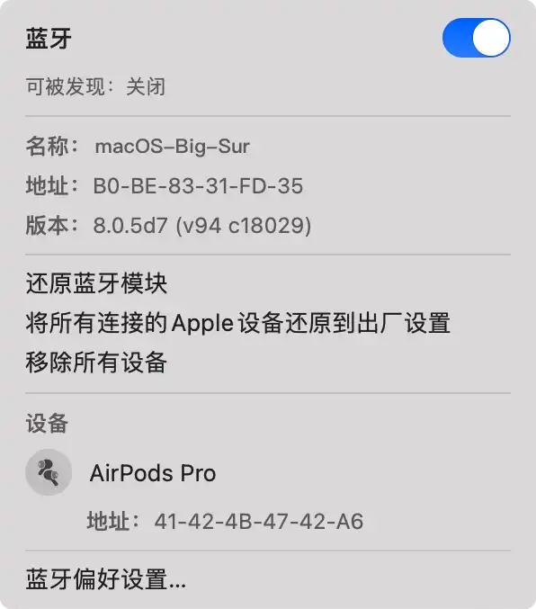
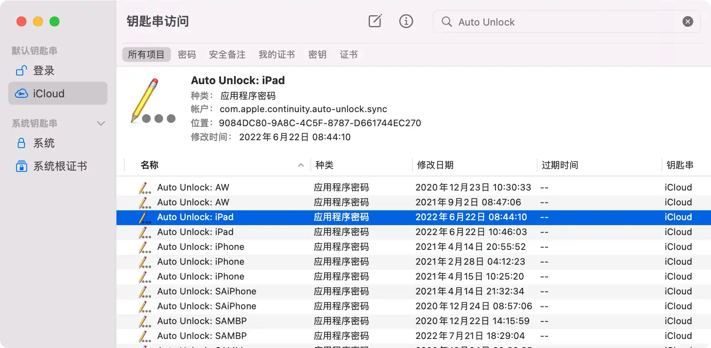
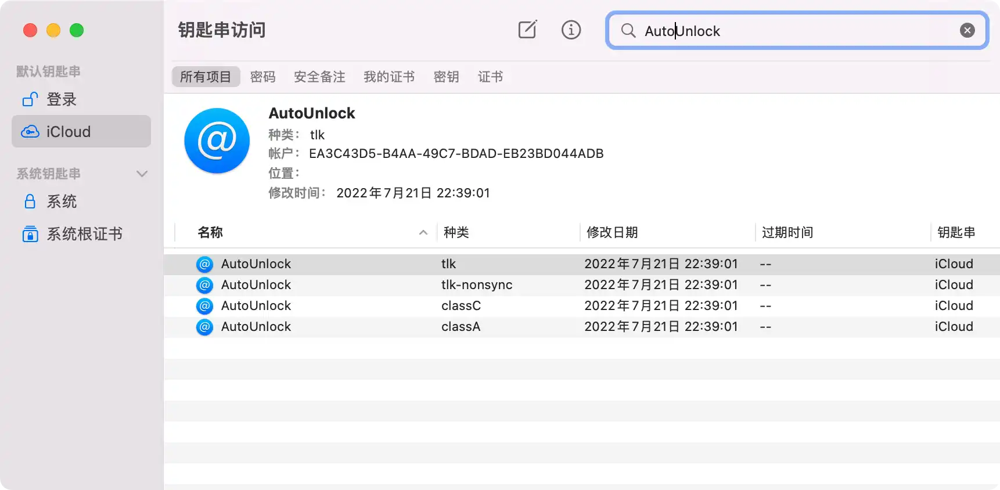
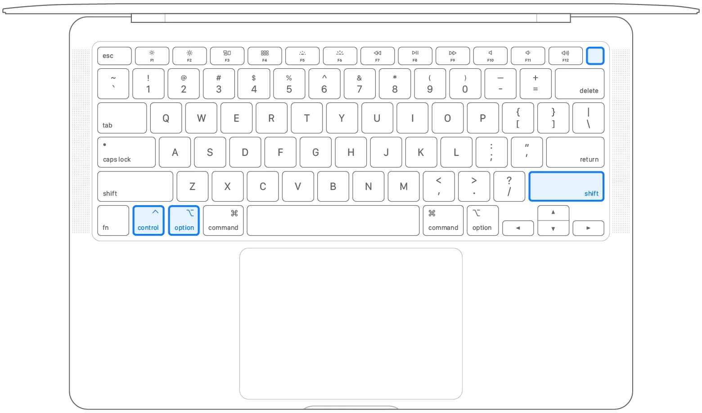
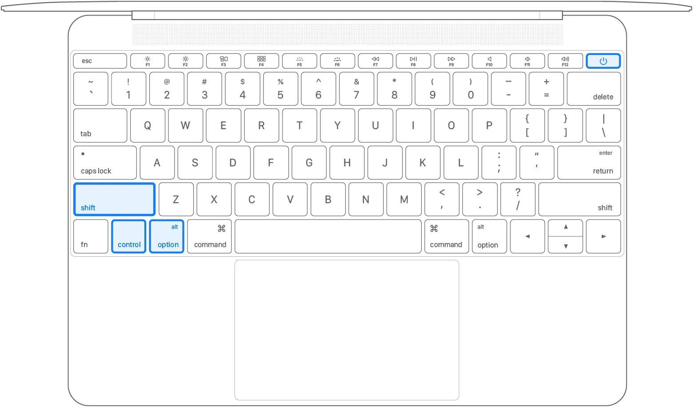
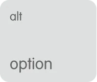

请访问原文链接：修复 Apple “连续互通” 方法汇总：修复 AirDrop、Apple Watch 解锁 Mac、HandOff 等 查看最新版。原创作品，转载请保留出处。
作者主页：sysin.org
how-to-fix-apple-continuity-from-sysin
macOS Big Sur 使 macOS 这款先进的桌面操作系统提升至性能与美学的新境界。通过精致的全新设计，充分体验 Mac 的强大功能。但是 Bug 也不可避免（戏称为 Bug Sir），比如常见的有：
-
卡顿（特别是中文输入法卡顿（包括系统自带的），11.1 未修复）
-
蓝牙问题，影响 AirDrop、Apple Watch Unlock Mac 等连续互通功能
本文描述了修复 Apple 连续互通故障的一般步骤。
Apple 连续互通故障特别复杂，可能修复一项功能，其他功能全部恢复正常，也可能某个功能独立故障无法修复，必要时请联系 Apple 支持。
1. 了解 Apple Continuity（连续互通）
使用 “连续互通” 连接 Mac、iPhone、iPad、iPod touch 和 Apple Watch
当您在所有设备上登录您的 Apple ID 后，您便可以使用 “连续互通” 功能在设备之间实现无缝衔接。点按下面的某项功能以了解相关信息，例如，如何在佩戴 Apple Watch 时自动解锁 Mac，或者如何使用 iPad 扩展 Mac 的工作空间。

隔空投送：通过无线方式将文稿、照片、视频、网站、地图位置等发送到附近的 iPhone、iPad、iPod touch 或 Mac 上。

隔空播放至 Mac：在 Mac 屏幕上共享、播放或演示来自其他 Apple 设备的内容。

Apple Pay：在 Mac 上在线购买，并使用 iPhone 或 Apple Watch 上的 Apple Pay 完成购买。

自动解锁：在您佩戴 Apple Watch 期间，快速访问 Mac 系统，还可以快速批准其他要求输入您的 Mac 管理员密码的请求。

“连续互通” 相机：使用 iPhone、iPad 或 iPod touch 扫描文稿或拍摄照片，随后相应文稿或照片会立刻出现在您的 Mac 上。

标记连续互通：使用 iPad、iPhone 或 iPod touch 将速绘、形状和其他标记添加到 Mac 文稿中，并在 Mac 上实时查看所做更改。

速绘连续互通：在 iPad、iPhone 或 iPod touch 上创建速绘，然后将速绘轻松插入 Mac 上的文稿中。

接力：在一台设备上开始工作，再切换到附近的另一台设备上继续工作。

智能热点：无需输入密码，便可以从您的 Mac、iPad、iPod touch 或另一台 iPhone 连接到您 iPhone 或 iPad（无线局域网 + 蜂窝网络）上的个人热点。

iPhone 蜂窝网络通话：从 Mac、iPad 或 iPod touch 拨打和接听电话，只要这些设备与 iPhone 连接到同一网络。

随航：将您的 iPad 用作第二个显示屏，以扩展或镜像您的 Mac 桌面。或者，将它用作平板电脑输入设备，以在 Mac App 中使用 Apple Pencil 进行绘图。

短信转发：在您的 Mac、iPad 和 iPod touch 上发送和接收 iPhone 短信和彩信。

通用剪贴板：在一台 Apple 设备上拷贝文本、图像、照片和视频等内容，然后在另一台 Apple 设备上粘贴这些内容。

通用控制：使用 Mac 的键盘、鼠标或触控板可控制最多两台附近的其他 Mac 或 iPad 设备，并在它们之间无缝操控。
系统要求（机型）
参看：Mac、iPhone、iPad、iPod touch 和 Apple Watch 上 “连续互通” 的系统要求
关于 AirDrop（隔空投送）
在 iPhone、iPad 或 iPod touch 上 “隔空投送” 的使用方法
关于 Apple Watch 解锁 Mac
关于 Handoff（接力）
2. 了解产生问题的原因
“连续互通” 各项特性都依赖三个条件
- 统一的 iCoud 账号（通常出现在 iCoud 登录和访问上，一般需要退出重新登录解决）
- 开启蓝牙（通常是蓝牙模块固件和配置等问题，通过重置配置来解决，某些时候需要系统更新才能彻底解决）
- Wi-Fi 连接（问题通常不会出现）
第三方应用软件的影响：一些使用蓝牙或者 Wi-Fi 的工具软件可能存在 Bug 影响了 “连续互通” 功能的正常发挥。
3. 第一步骤：通过 “安全模式” 快速修复
安全模式可以帮助您确定问题是不是由 Mac 启动时载入的软件所致。
操作步骤：
Apple 芯片
- 将 Mac 关机。
- Mac 启动时，按住键盘上的 电源按钮 10 秒钟。
- 当您看到 启动选项 窗口时，松开 电源按钮。
- 选择您的启动磁盘，按住 Shift 键，点按 “继续以安全模式运行”，然后松开 Shift 键。
- 登录到 Mac。系统可能会要求您再次登录。
Intel 处理器
- 启动或重新启动 Mac，然后在 Mac 启动时立即按住 Shift 键。
- 看到登录窗口时，松开这个按键，然后登录 Mac。
- 系统可能会要求您再次登录。在第一个或第二个登录窗口中，您应该会在窗口的右上角看到 “安全启动”。
验证问题
此时我们可以尝试一下 AirDrop（隔空投送）传输文件，或者 Apple Watch 解锁 Mac 等有问题的 “连续互通” 特性。如果在安全模式下工作正常，那么请正常重新启动 Mac 以退出安全模式 (sysin)。然后再次测试是否存在问题。此时问题可能已解决。（恭喜！这是最简单的修复步骤。）
如果问题在安全模式下仍然存在。
如果问题在安全模式下仍然存在，或者在安全模式下启动时您的 Mac 重新启动数次后关机，则应 重新安装 macOS 并确保您的 Apple 软件和第三方 App 是最新版本。
如果在安全模式下问题已经解决，重启后问题依旧，可以尝试下述修复步骤。
4. 验证 iCloud 的连续互通性
我们可以使用 “接力” 或者 “通用剪贴板” 来测试一下 iCloud 账号是否连续互通。
- 在 iOS 或者 Mac 上打开 Safari 浏览器，打开一个网页，比如：sysin.org，此时查看另外一台 iOS 或者 Mac 的 Docker 栏是否出现了 Safari 的提示图标。
- 在 iOS 或者 Mac 上复制一段字符文本，在然后在另外一台 iOS 或者 Mac 上（比如 Safari 的地址栏）进行粘贴，看是否出现了对应的内容。
如果以上都没有问题，请继续下一步骤。
如果上述测试都无法完成，请考虑退出 iCloud 账号并重新登录。
5. 重置和修复蓝牙
重置蓝牙模块
按住 Shift + Option，同时点按菜单栏的蓝牙图标（控制中心图标中的蓝牙图标也可以）, 出现菜单如下，点击 “还原蓝牙模块”

⚠️ 该配置项在 macOS Monterey 中已经不可用。
重置蓝牙配置文件
关闭蓝牙（某些情况下无法正常关闭，需要执行命令 sudo pkill blued，这也是蓝牙问题的征兆）。
然后打开终端，执行如下命令删除配置文件：
sudo rm /Library/Preferences/com.apple.Bluetooth.plist
然后重新开启蓝牙。
⚠️ 该配置项在 macOS Monterey 中已经不可用。
删除 Apple Watch 解锁 Mac 配置文件
（1）打开 钥匙串访问（KeyChain Access），点击菜单 “显示” - “显示不可见项”
启动台 - 其他 - 钥匙串访问，或者直接搜索 KeyChain。
（2）搜索 Auto Unlock，将出现的项全部删除

（3）继续搜索 AutoUnlock，将出现的内容全部删除

（4）打开终端，执行如下命令：
1 | rm ~/Library/Sharing/AutoUnlock/ltk.plist |
最后重启，验证问题是否解决。
6. 排查 App 问题
如前所述在安全模式下面如果问题已经得到解决，有可能是系统加载了一些自动启动的 App 影响了蓝牙或者 Wi-Fi 的可用性，此时禁止 App 自动启动来验证问题，可以通过 App 的设置来禁止自动启动，或者使用一些系统优化工具来控制 App 开机启动。
重启系统验证问题是否解决，必要时，使用排除法来确定是哪个 App 的问题，然后更新（或者降版本）确认有问题的 App。
笔者使用的一款 Wi-Fi 管理工具就是一个例子，因为经常要使用该工具，开机自启动，结果导致 AirDrop 失效，尝试多种方式修复，短暂恢复后再次失效，后来更新到新版 App 才得以彻底修复。
如果问题依然没有解决，下一步将重置 SMC 和 NVRAM。
7. 重置 Mac 的 SMC
重置系统管理控制器 (SMC) 可以解决某些与电源、电池、风扇和其他功能相关的问题。
如果您拥有的是搭载 Apple 芯片的 Mac
确保 Mac 已插接电源。然后重新启动，或者关机后再开机。对于搭载 Apple 芯片的 Mac 电脑，无需完成其他步骤。
在配备 T2 芯片的电脑上重置 SMC
如果您的 Mac 配备 Apple T2 安全芯片，请按照以下步骤操作。如果您需要协助，请 联系 Apple 支持。
配备 T2 芯片的笔记本电脑
重置 SMC 之前，请尝试以下步骤：
- 将 Mac 关机。
- 按住 电源按钮 10 秒钟，然后松开这个按钮。
- 等待几秒钟，然后按下 电源按钮 以将 Mac 开机。
如果问题仍然存在，请按照以下步骤重置 SMC：
- 将 Mac 关机。
- 在内建键盘上，按住以下所有按键。Mac 可能会开机。
- 键盘左侧的 Control
- 键盘左侧的 Option (Alt)
- 键盘右侧的 Shift
- 按住 全部三个按键 7 秒钟 (sysin)，然后在不松开按键的情况下按住 电源按钮。如果 Mac 处于开机状态，它将在您按住这些按键时关机。
 - 继续按住 全部四个按键 7 秒钟，然后松开这些按键。
- 等待几秒钟，然后按下 电源按钮 以将 Mac 开机。
配备 T2 芯片的台式电脑
- 将 Mac 关机，然后拔下电源线。
- 等待 15 秒钟，然后重新接回电源线。
- 等待 5 秒钟，然后按下 电源按钮 以将 Mac 开机。
在其他电脑上重置 SMC
如果您的 Mac 没有配备 Apple T2 安全芯片，请按照以下步骤操作。如果您需要协助，请 联系 Apple 支持。
装有不可拆卸电池的笔记本电脑
这类电脑包括 2009 年中至 2017 年推出的 MacBook Pro 机型、2017 年或之前推出的 MacBook Air 机型，以及所有 MacBook 机型，但 MacBook（13 英寸，2009 年中）除外。
- 将 Mac 关机。
- 在内建键盘上，按住以下所有按键：
- 键盘左侧的 Shift
- 键盘左侧的 Control
- 键盘左侧的 Option (Alt)
- 在按住 全部三个按键 的情况下，按住 电源按钮。
 - 按住 全部四个按键 10 秒钟。
- 松开所有按键，然后按下 电源按钮 以将 Mac 开机。
装有可拆卸电池的笔记本电脑
这类电脑包括 2009 年初或之前推出的所有 MacBook Pro 和 MacBook 机型，以及 MacBook（13 英寸，2009 年中）。
- 将 Mac 关机。
- 拆下电池。（如果您需要拆卸电池方面的协助，请联系 Apple Store 商店 或 Apple 授权服务提供商。）
- 按住 电源按钮 5 秒钟。
- 重新安装电池。
- 按下 电源按钮 以将 Mac 开机。
台式电脑
- 将 Mac 关机，然后拔下电源线。
- 等待 15 秒钟，然后重新接回电源线。
- 等待 5 秒钟，然后按下 电源按钮 以将 Mac 开机。
8. 重置 Mac 上的 NVRAM 或 PRAM
如果您拥有的是搭载 Apple 芯片的 Mac：
重置 NVRAM 的步骤不适用于搭载 Apple 芯片的 Mac 电脑，这类电脑也不需要完成这些步骤。
如果您拥有的是基于 Intel 的 Mac：
如果 Mac 出现了与 NVRAM 或 PRAM 中储存的设置有关的问题，那么进行重置可能会有帮助。
NVRAM（非易失性随机访问存储器）是一小部分内存，Mac 使用这些内存来储存某些设置并对其进行快速访问。PRAM（参数 RAM）储存着类似的信息，且 NVRAM 和 PRAM 的重置步骤相同。
可储存在 NVRAM 中的设置包括音量、显示屏分辨率、启动磁盘选择、时区，以及最近的内核崩溃信息 (sysin)。储存在 NVRAM 中的设置取决于您的 Mac 以及与这台 Mac 搭配使用的设备。
如果您遇到与这些设置或其他设置有关的问题，那么重置 NVRAM 可能会有帮助。例如，如果 Mac 并非从 “启动磁盘” 偏好设置中选定的磁盘启动，或者在 Mac 启动前短暂地显示了一个问号图标，则可能需要重置 NVRAM。
如何重置 NVRAM：
| Option | + | Command | + | P | + | R |
|---|---|---|---|---|---|---|
|  |
将 Mac 关机，然后开机并立即同时按住以下四个按键：Option、Command、P 和 R。您可以在大约 20 秒后松开这些按键，在此期间您的 Mac 可能看似在重新启动。
- 在会发出 启动声 的 Mac 电脑上，您可以在两次启动声之后松开这些按键。
- 在 配有 Apple T2 安全芯片的 Mac 电脑 上，您可以在 Apple 标志出现并再次消失后松开这些按键。
如果您的 Mac 使用了 固件密码，这个组合键将不起任何作用或导致您的 Mac 从 macOS 恢复功能 启动。要重置 NVRAM，请先关闭固件密码。
在您的 Mac 完成启动后，您可能需要打开 “系统偏好设置” 并调整已重置的任何设置，例如音量、显示屏分辨率、启动磁盘选择或时区。
9. 软件更新
什么？系统已经是 macOS 11.5 + iOS 14.5 (12.5 + 15.5)，在等等看吧…
10. 系统恢复
无力回天只能 重新安装 macOS。
11. 联系 Apple Support
都重新安装了系统，也无法解决？
-
请致电 400-666-8800
-
到全国任意一家 Apple Store 零售店

文章用于推荐和分享优秀的软件产品及其相关技术，所有软件默认提供官方原版（免费版或试用版），免费分享。对于部分产品笔者加入了自己的理解和分析，方便学习和研究使用。任何内容若侵犯了您的版权，请联系作者删除。如果您喜欢这篇文章或者觉得它对您有所帮助，或者发现有不当之处，欢迎您发表评论，也欢迎您分享这个网站，或者赞赏一下作者，谢谢！
 支付宝赞赏
支付宝赞赏
 微信赞赏
微信赞赏
赞赏一下